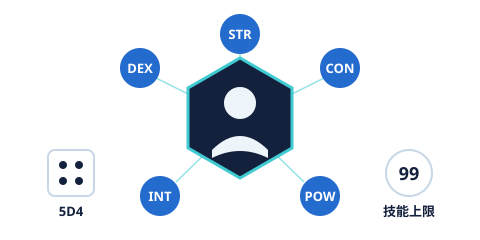
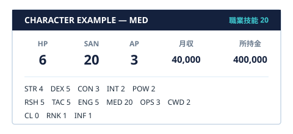

プレイヤーキャラクターは、以下の手順で作成する。
- 基本能力値を決定する
- 職業を決定する
- 技能ポイントを計算する
- 技能ポイントを各技能へ振り分ける
- 社会ポイントを計算する
- CL、RNK、INFへ社会ポイントを振り分ける
- HP、SAN、APなどを計算する
- 月収と所持金を計算する
- KPと相談してパッシブを決定する
- 必要に応じて武器やデッキを決定する
キャラクターの名前、年齢、性格、経歴などのプロフィールは、別途作成するキャラクターシートで管理する。
キャラクター作成時に5D4を振り、出た合計値をSTR、DEX、CON、INT、POWの5つへ自由に振り分ける。
各能力値には最低1を割り振る。能力値の最大値は20。小数点が発生する計算は、すべて切り上げる。
| STR | パワーを表す能力値。近接攻撃の補正や受身などに関係する。 |
|---|---|
| DEX | スピードを表す能力値。行動順や回避、APなどに関係する。 |
| CON | 耐久力を表す能力値。HPに関係する。 |
| INT | 知性を表す能力値。技能ポイントの計算に関係する。 |
| POW | 意志の強さを表す能力値。技能ポイントやSANの計算に関係する。 |
| SYN | 同期率を表す特殊ステータス。キャラクター作成時に割り振るものではなく、ゲーム中の出来事などによって後から変動する。 |
技能は、キャラクターが持つ専門的な能力や知識を表す。技能値の初期値は0。技能値の最大値は99。
技能判定では、基本的にCCBを使用する。判定結果が技能値以下なら成功となる。
| RSH 研究 | 研究、分析などに使用する。 例 CCB<={RSH} 【研究】 |
|---|---|
| TAC 戦闘 | 戦闘に関する知識や技術などに使用する。CCB<={TAC} 【戦闘】 |
| ENG 技術 | 機械や設備など、技術に関する行動に使用する。CCB<={ENG} 【技術】 |
| MED 医療 | 治療や医療知識などに使用する。CCB<={MED} 【医療】 |
| OPS 情報 | 情報収集や情報分析などに使用する。CCB<={OPS} 【情報】 |
| CWD 指導 | 指導、教育、指揮などに使用する。CCB<={CWD} 【指導】 |
技能判定では、状況に応じて技能値そのものに補正が加わる場合がある。
補正後の技能値が99を超える場合でも、判定上の技能値は99を上限とする。
| 01〜05 | クリティカル。通常の成功よりも優れた結果となる。 |
|---|---|
| 95〜100 | ファンブル。通常の失敗よりも悪い結果となる。具体的な効果は、状況に応じてKPが決定する。 |
STR、DEX、CON、INT、POWなどの能力値そのものを使用する判定も行う。能力値判定は、クトゥルフ神話TRPGと同様に、能力値を5倍した値を判定値とする。
能力値判定でもクリティカルとファンブルのルールを適用する。
キャラクターは以下の6種類から職業を1つ選択する。選択した職業に対応する技能を職業技能とする。
| RSH | 研究職 |
|---|---|
| TAC | 戦闘員 |
| ENG | 技術者 |
| MED | 医療職 |
| OPS | 情報員 |
| CWD | 指導者 |
例：MEDを選択した場合、職業技能はMEDとなる。
技能ポイントは、INTとPOWを使用して決定する。
得られた技能ポイントを、RSH、TAC、ENG、MED、OPS、CWDの6技能へ自由に振り分ける。職業技能に多くのポイントを振ることで、その職業に適したキャラクターを作成できる。
技能ポイントを振り分けた後、職業技能の値を使用して社会ポイントを決定する。
得られた社会ポイントを、以下の3項目へ自由に振り分ける。CL、RNK、INFは0にすることも可能。
| CL | 社会信用度 |
|---|---|
| RNK | 権限 |
| INF | 影響力 |
HPはCONによって決定する。
SANはPOWによって決定する。
APはDEXによって決定する。小数点が発生した場合は切り上げる。
APの具体的な使用方法については、戦闘ルールを参照する。
キャラクターの月収は、職業技能とRNKによって決定する。RNKが0の場合でも、RNK+1によって最低限の月収が発生する。
ただし、設定上の理由によって扶養されているなど、意図的に無収入とすることもできる。
キャラクターの初期所持金は、職業技能とRNKによって決定する。RNKが0の場合でも、RNK+1によって初期所持金が発生する。
ただし、キャラクター設定や状況によって所持金を0とすることもできる。
パッシブは、キャラクターそれぞれに与えられる固有スキル。能力値や技能とは別に、そのキャラクターだけの特徴や強みを表す。
- パッシブは、1人のキャラクターにつき1つ持つ。
- パッシブの内容は、ダイスなどでは決めず、プレイヤーとKPが話し合って決定する。
- 効果はパッシブごとに異なり、判定への数値補正などが含まれる場合もある。
- パッシブの効果が発動するタイミングは、内容によって「常時」と「条件」のどちらかとなる。
| 常時 | 特に条件なく、常に効果を発揮するパッシブ。 |
|---|---|
| 条件 | あらかじめ決められた条件を満たしたときにだけ、効果を発揮するパッシブ。 |
パッシブの例
| 我慢強い | 攻撃を受けた際、10分の1の確率でダメージを無効化する。 |
|---|---|
| 最後まで立つ | HPが0になった際、1シナリオにつき1回だけ、HP1で踏みとどまる。 |
| 目ざとい | 他のキャラクターが気づかなかった小さな変化や物を発見できることがある。 |
| 知識力 | わからないことについてINT判定に成功することで、資料集に記載されている情報や世界についての知識を思い出すことができる。また、関連する情報や気になる情報をピックアップすることができる。 |
| 生還者 | その国のシナリオ中、1回だけ死亡する結果を回避する。 |
| 即席改造 | 本来の用途とは異なる使い方ができそうな機械や道具を見つけた場合、KPと相談して別の用途に使用できる。 |
| 異常察知 | 他人の身体に普段と異なる異常がある場合、外見からは分からないものであっても察知できることがある。 |
| 人の縁 | NPCとの関係が悪化する場面でも、好感度が通常より減少しにくい。また、一度築いた関係が失われにくい。 |
| 空気を読む | 集団の中で、その場の雰囲気や人間関係の変化に気づくことができる。 |

例として、以下の能力値を持つキャラクターを作成する。
職業としてMEDを選択した場合、MEDが職業技能となる。技能ポイントは、
この40ポイントを6つの技能へ自由に振り分ける。例えば、
とした場合、職業技能はMEDの20となる。社会ポイントは、
この2ポイントをCL、RNK、INFへ自由に振り分ける。例えば、CL 0 / RNK 1 / INF 1 とする。
- 能力値の初期値は5D4の結果を使用する。
- 能力値の上限は20。能力値には最低1を割り振る。
- 技能値の初期値は0。技能値の上限は99。
- 小数点が発生する計算は切り上げる。
- CL、RNK、INFは0でもよい。
- RNKが0の場合でも、月収と所持金はRNK+1によって計算される。
- 設定上の理由によって、意図的に無収入・所持金0とすることもできる。
- SYNはキャラクター作成時に割り振らず、ゲーム中に変動する特殊ステータスとして扱う。
- パッシブは1人につき1つ。内容はプレイヤーとKPが話し合って決める。
- 戦闘に関する詳細なルールは、別途戦闘ルールを参照する。